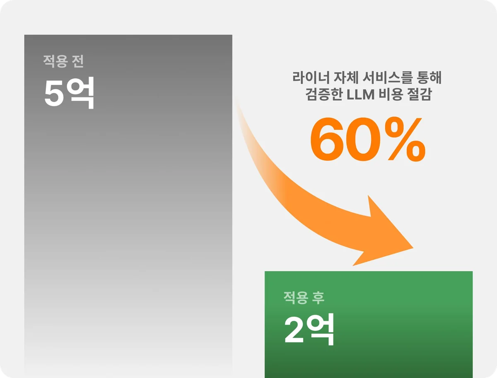
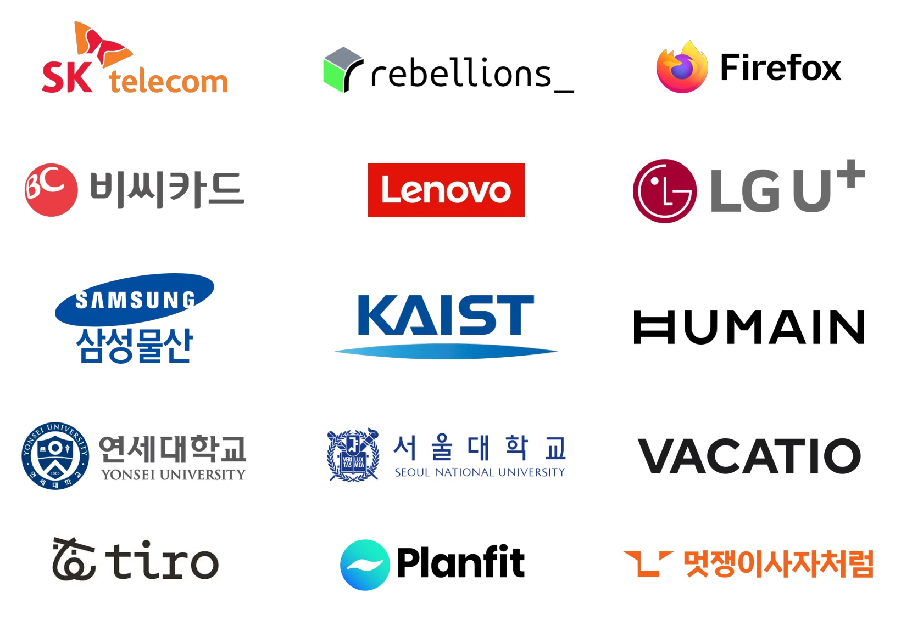
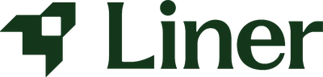
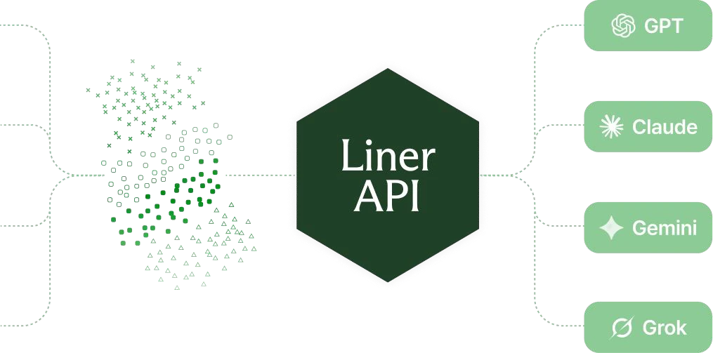

Liner Model API
더 높은 성능을
50% 가격으로
liner.com/developers/liner-model
Liner Model API 소개서, 2026.10
LINER MODEL API
도입효과: LLM 추론 비용 60% 절감
그러면서 답변 품질은 더 좋아졌습니다.

Liner 대표 파트너사


Liner Model API02LINER MODEL API
프롬프트 요청마다 적합한 모델이 상이하며, 최적화가 필수임
간단한 검색부터 글쓰기 그리고 논문 기반 리서치와 작성까지 다양한 라이너의 서비스
간단한 요청
복잡한 요청
Rule-Based 라우팅
같은 태스크의 쉬운 요청도 어려운 요청도 단일 모델
가벼운 모델은 성능의 문제
최상위 모델은 비용의 문제
프롬프트 레벨 라우팅
같은 태스크여도 프롬프트 난이도에 따라 모델을 선택
성능은 높이면서 비용도 낮춤
“프롬프트 레벨에서 알맞은 모델을 찾는 모델을 학습해 보자.”
LINER MODEL API
라이너의 1.1억 개 프롬프트로 학습한 결과
비용은 50% 이상 줄면서 품질은 올랐습니다.

라이너 서비스에서 요청되는 연간 1.1억 개 프롬프트를 바탕으로 학습하여 가장 적합한 모델을 선택
LINER MODEL API
라이너가 절감한 방법이 적용된 LLM API
성능은 GPT-6 Sol, Claude Opus 5 이상
50% 절감
GPT-6 Sol, Claude Opus 5 대비
성능은 더 높게
태스크별 공개 벤치마크 6종 중 4개에서 1위
| $ / 1M Token | Liner | GPT-6 Sol | Claude Opus 5 |
|---|---|---|---|
| Input | $ 1.00 | $ 2.00 | $ 5.00 |
| Output | $ 5.00 | $ 10.00 | $ 25.00 |
| Cached Input | $ 0.10 | $ 0.20 | $ 0.20 |
가격: OpenRouter 공개 요금표. liner-mark-1.1 기준 (2026.09.23)
성능: 라이너 자체 측정 (2026.09.01, liner-mark-1.0), HLE, MedQA, MathBench, SciCode, AIME, FinQA
LINER MODEL API
세 줄만 바꾸면 바로 50% 절감
Base URL, API 키, 모델 이름만. 이외에는 모두 동일합니다.
Python
from openai import OpenAI
client = OpenAI(
base_url="https://platform.liner.com/api/v1", # 변경
api_key="<LINER_API_KEY>", # 변경
)
response = client.chat.completions.create(
model="liner-mark-1.1", # 변경
messages=[{"role": "user", "content": "..."}],
)
아래는 모두 그대로
- OpenAI SDK (Python, Node, Go 등)
- Chat Completions, Responses API
- 스트리밍 (SSE), 함수 호출
- JSON 출력, 이미지 입력 등 입출력
npx skills add liner-engineering/skills --skill migrate-to-liner
자주 묻는 질문 1
보안과 SLA
엔터프라이즈 보안 기준과 99.9% 가동률 SLA. API로 보낸 데이터는 모델 학습에 쓰지 않습니다.
99.9%
가동률 SLA, 엔터프라이즈 플랜
보안과 규정 준수
- SOC 2 Type I, II
- ISO/IEC 27001:2022
- HIPAA
- HECVAT
- Gen AI Foundation
- Responsible AI Foundation
보안 검토 자료는 trust.liner.com
SLA는 어떤 수준인가요?
엔터프라이즈 플랜으로 계약 시 월간 가동률 99.9%를 보장합니다. OpenAI Scale Tier, Azure OpenAI와 같은 수준이고 미달 시 크레딧으로 보전합니다.
보낸 데이터가 모델 학습에 쓰이나요?
쓰지 않습니다. API로 보낸 데이터는 학습에 사용하지 않고, 처리 조건은 DPA로 정합니다. 필요하면 ZDR을 추가합니다.
특정 제공사에 장애가 나면요?
멀티 리전으로 운영합니다. 특정 리전이나 제공사에 장애가 생기면 다른 경로로 자동 전환해 중단을 최소화합니다.
Rate limit과 처리량은요?
기본 제공량으로 시작하고 필요한 처리량에 맞춰 한도를 높입니다. 엔터프라이즈 플랜은 보장 처리량과 전용 용량을 제공합니다.
자주 묻는 질문 2
라우팅, 대상, 성능, PoC
복잡한 업무용 프롬프트도 잘 라우팅되나요?
라이너는 자료조사 중심 AI 검색, 보고서 중심 Write, 논문 중심 Scholar로 구성돼 업무용 프롬프트와 에이전트 이용 비중이 높습니다. Liner Model API는 다양한 서비스의 업무 요청에 맞게 학습됐습니다.
코딩 태스크에도 쓸 수 있나요?
현재 Liner Model API는 liner-mark-1.1 기준 GPT-6 Sol, Claude Opus 5 수준의 코딩 태스크를 수행할 수 있습니다. Astra, Fable 수준의 코딩 태스크를 수행하는 라우팅 모델은 현재 준비 중입니다.
벤치마크 결과는요?
liner-mark-1.0 기준 공개 벤치마크 6개 중 HLE, MedQA, MathBench, SciCode 4개에서 1위, AIME 3위, FinQA 2위입니다(라이너 자체 측정, 2026.09, 추론 강도 medium). GPT-5.6 Terra와 비교하면 6개 중 5개에서 비슷하거나 더 낫습니다. 새로운 버전과 벤치마크 결과는 소개 페이지에서 확인하실 수 있습니다.
PoC는 얼마나 걸리나요?
내부 eval 셋이 있으면 하루 이내에도 결과가 나옵니다. 별도 eval이 없는 경우 운영 트래픽의 10~20%로 품질, 요청당 비용, 응답속도를 A/B 비교하였고, 대다수의 고객사에서 대략 1주 테스트 후 전체 도입하였습니다.